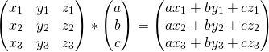
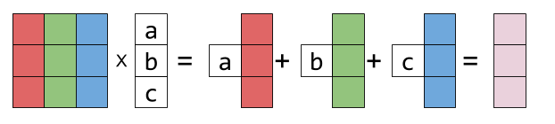
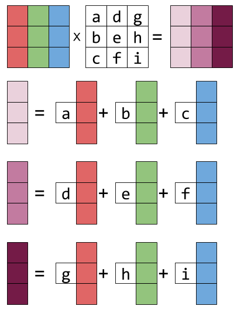
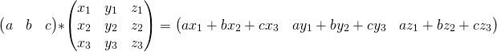
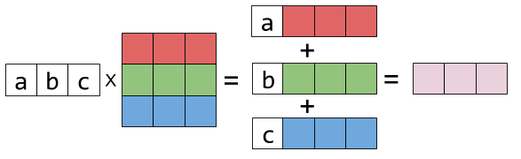
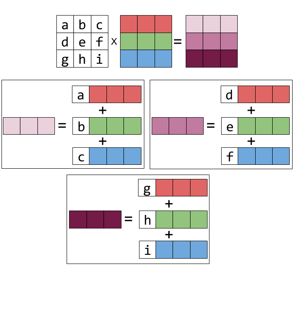

When multiplying two matrices, there's a manual procedure we all know how to go through. Each result cell is computed separately as the dot-product of a row in the first matrix with a column in the second matrix. While it's the easiest way to compute the result manually, it may obscure a very interesting property of the operation: multiplying A by B is the linear combination of A's columns using coefficients from B. Another way to look at it is that it's a linear combination of the rows of B using coefficients from A.
In this quick post I want to show a colorful visualization that will make this easier to grasp.
Right-multiplication: combination of columns
Let's begin by looking at the right-multiplication of matrix X by a column vector:
Representing the columns of X by colorful boxes will help visualize this:
Sticking the white box with a in it to a vector just means: multiply this vector by the scalar a. The result is another column vector - a linear combination of X's columns, with a, b, c as the coefficients.
Right-multiplying X by a matrix is more of the same. Each resulting column is a different linear combination of X's columns:
![\[\begin{pmatrix} {\color{Red} x_1} & y_1 & z_1 \\ x_2 & y_2 & z_2 \\ x_3 & y_3 & z_3 \\ \end{pmatrix}* \begin{pmatrix} a & d & g \\ b & e & h \\ c & f & i \\ \end{pmatrix}= \begin{pmatrix} ax_1+by_1+cz_1 & dx_1+ey_1+fz_1 & gx_1+hy_1+iz_1 \\ ax_2+by_2+cz_2 & dx_2+ey_2+fz_2 & gx_2+hy_2+iz_2 \\ ax_3+by_3+cz_3 & dx_3+ey_3+fz_3 & gx_3+hy_3+iz_3 \\ \end{pmatrix}\]](../../images/math/d6065791babbc5b967c06b57322711424097c83c.png)
Graphically:
If you look hard at the equation above and squint a bit, you can recognize this column-combination property by examining each column of the result matrix.
Left-multiplication: combination of rows
Now let's examine left-multiplication. Left-multiplying a matrix X by a row vector is a linear combination of X's rows:
Is represented graphically thus:
And left-multiplying by a matrix is the same thing repeated for every result row: it becomes the linear combination of the rows of X, with the coefficients taken from the rows of the matrix on the left. Here's the equation form:
![\[\begin{pmatrix} a & b & c \\ d & e & f \\ g & h & i \\ \end{pmatrix}* \begin{pmatrix} x_1 & y_1 & z_1 \\ x_2 & y_2 & z_2 \\ x_3 & y_3 & z_3 \\ \end{pmatrix}= \begin{pmatrix} ax_1+bx_2+cx_3 & ay_1+by_2+cy_3 & az_1+bz_2+cz_3 \\ dx_1+ex_2+fx_3 & dy_1+ey_2+fy_3 & dz_1+ez_2+fz_3 \\ gx_1+hx_2+ix_3 & gy_1+hy_2+iy_3 & gz_1+hz_2+iz_3 \\ \end{pmatrix}\]](../../images/math/35d9e54624bf17576372da3bf144dd4659b225e1.png)
And the graphical form:
